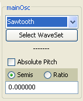
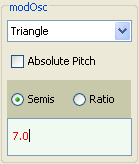

|
Mobileer Instrument Editor
CONFIDENTIAL and PROPRIETARY - © 2002-6 Mobileer Inc.
|
Making a Two Oscillator Instrument
In this instrument we will combine the sound of two oscillators. 
- If the "WhizzyOrgan" instrument is not already open then click on the "Edit" button on the "17. Drawbar Organ" line.
- Uncheck the "Phase Mod" button (near top left) if checked. This means the modOsc and mainOsc will be mixed together and not used for FM (actually phase modulation).
- Click "Play Keys" and play the "A" key.
- Check the "Repeat Last Note" box so it keeps playing.
- In the mainOsc area, click on the "Square" wave form and select "Sawtooth". Notice the tone change.
- Change the "phaseModDepth fader. That will change the mix level for the modOsc oscillator.
- Uncheck the "Repeat Last Note" box so it stops playing.
- In the modOsc area, check the "Semis" button so that we can enter a semitone offset.
- In the text box enter 7. Notice it turns red. That means it has not been entered yet. Hit ENTER to finish changing the value.
- Click "Play Keys", play the keyboard, and notice the instrument now has two tones tuned 7 semitones, or a fifth, apart.
| Top | Previous | Next |